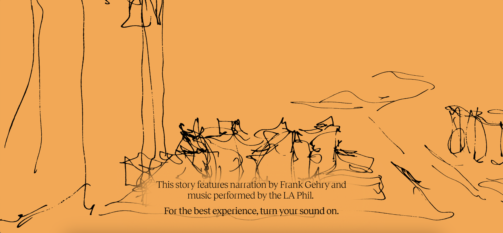

[1] THE FIRST THING I PAID ATTENTION TO
The first thing that caught my attention was the freehand sketch lines forming a rough, unfinished composition, accompanied by expressive orchestral music that began playing after I followed the initial prompt. At first, I wasn’t sure what the sketches were showing, and the animation of the lines made me pause and pay more attention until it finished. The music also stood out, as it felt similar to the moment just before a performance begins in an opera house. When I reached the landing page, the large and playful typeface used for the title Sculpting Harmony reinforced my first impression and set the tone for the experience.
